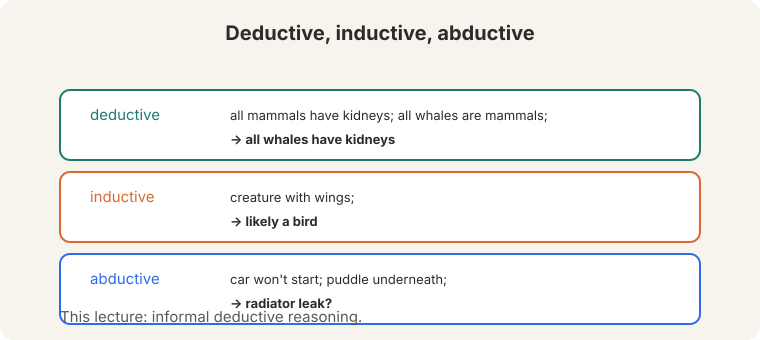
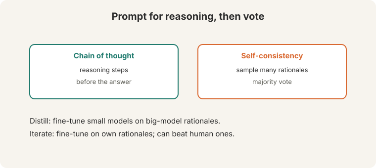
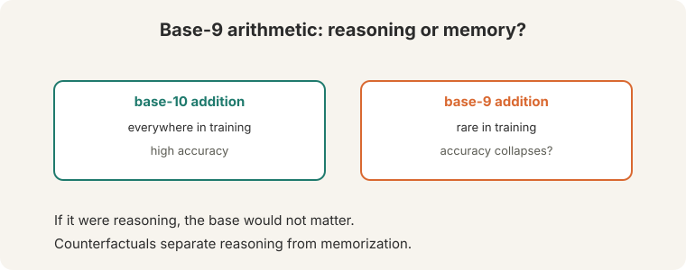
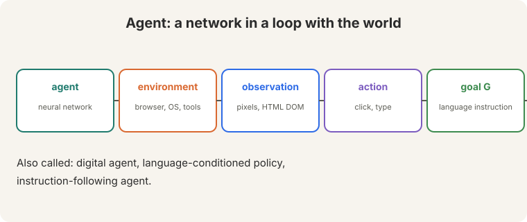
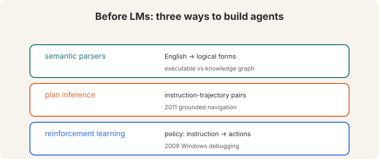
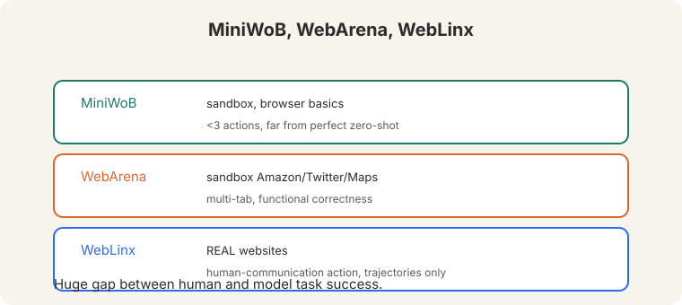
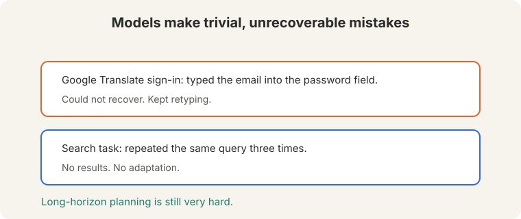

Lecture 14: Reasoning and Agents
Video blocked (ad-blocker or local file mode).
Watch on YouTubeVideo not loading? Watch on YouTube
Guest lecture. Shikhar Murty covers reasoning in LMs and language model agents.
How to read this lesson
This lesson has two levels. Level 1 (Core) covers reasoning: its kinds, how to prompt it, and how to test it. Level 2 (Deep) builds agents from definitions to benchmarks.
Level 1: Three kinds of reasoning

- Deductive. All mammals have kidneys (01:49 ⏱01:49). All whales are mammals. Therefore all whales have kidneys. Certain, given the premises.
- Inductive. A creature with wings is likely a bird. Probable, not certain.
- Abductive. The car will not start and there is a puddle underneath (02:46 ⏱02:46): probably a radiator leak. Best explanation of the evidence.
This lecture studies informal deductive reasoning: everyday inference, not formal proofs.
Level 1: Prompting reasoning
Two prompting methods get reasoning behavior:

- Chain-of-thought prompting. Write reasoning steps before the answer.
- Self-consistency (05:04 ⏱05:04). Sample multiple rationales (05:14 ⏱05:14), take the majority vote. Helps on math reasoning tasks.
Training methods go further. Generate rationales from a big model, fine-tune a small model on them (distillation). Or fine-tune the big model on its own rationales iteratively (17:35 ⏱17:35): performance can keep improving and even beat human-provided rationales.
Level 1: Counterfactuals test reasoning
Are models reasoning, or recalling? Counterfactual evaluation: change the task so training data cannot explain success. Instead of base-10 addition, test base-9 addition (25:49 ⏱25:49).

If the model truly reasons, the base should not matter. If accuracy collapses, the performance came from training data. Be careful about data contamination before claiming reasoning.
The algorithm is identical. Only the symbols change. A reasoner applies the same algorithm to new symbols. A memorizer has no base-9 examples to recall. The gap between the two scores measures memorization. No. It proves this task’s success came from data, not reasoning. The model might reason elsewhere. Counterfactuals falsify specific claims. They do not certify general inability.
Level 2: What an agent is
An agent is a neural network in a loop with the world:

- Agent: the neural network.
- Environment: web browser, digital assistants, programming tools, UI automation, Spotify, plugins.
- Observation: what the agent sees: pixels or HTML DOM.
- Action: what it does: click, type, move the mouse.
- Goal G: a language instruction, e.g. book a flight from SF to NYC (31:56 ⏱31:56).
Also called: digital agent, language-conditioned policy, instruction-following agent.
Level 2: Before language models

Level 2: Before language models
Three pre-LM approaches:
- Semantic parsers. Translate English commands to logical forms, executable against a knowledge graph or database (34:16 ⏱34:16).
- Plan inference. Learn executable plans from instruction-trajectory pairs, with a rich execution model (2011 grounded navigation).
- Reinforcement learning. Learn a policy from instructions to actions, maximizing sparse or dense reward (2009 automated Windows debugging).
Level 2: Decision making as causal language modeling
The 2024 reframing: generative trajectory modeling. P(trajectory | goal) = transition dynamics x policy. An autoregressive LM predicts the next action.
The simple LM agent: action space in text, plus the instruction, plus the action/observation history, predicts the next action. “Just Chain of Thought prompting in a loop” (42:35 ⏱42:35).

Training data is the bottleneck. Human demos as few-shot examples do not scale. The fix: synthetic demonstrations. Let the model explore randomly, then use a second LM to label or relabel the trajectories (hindsight relabeling, 62:54 ⏱62:54). Iterate.
Level 2: Benchmarks and failures

- MiniWoB (43:11 ⏱43:11). Sandbox browser basics: retweet, forward email. Under 3 actions. Best LMs “far from perfect” zero-shot (43:53 ⏱43:53).
- WebArena (44:38 ⏱44:38). Sandbox approximating Amazon, Twitter, Maps. Multi-tab browsing. Functional correctness.
- WebLinx (45:31 ⏱45:31). Real websites, not sandboxed. A new human-communication action for credit-card requests. Trajectories only, no exploration.
The failures are embarrassingly simple:

GPT-4V signing into Google Translate typed the email into the password field and could not recover (59:39 ⏱59:39). Another model repeated the same search term three times. Long-horizon planning is still very hard, and the human-model gap is huge.
No error recovery. A human notices the wrong field, deletes, and retypes. The model commits to its trajectory and cannot step back. Long horizons multiply the failure: each step is a chance to derail with no recovery mechanism. The lecture points at training: synthetic demonstrations with hindsight relabeling teach recovery implicitly. Explicit planning, verification steps, and the ability to ask the user (WebLinx’s communication action) are the architectural directions.
Recap: the whole lesson on one screen
Eight ideas carry this lecture. Read each card. Say the core sentence out loud. If you can, you own the lesson.
Deductive: certain from premises. Inductive: probable from examples. Abductive: best explanation. This lecture: informal deductive.
Key: kidneys, wings, puddles
Chain of thought: steps before answers. Self-consistency: sample many, majority vote. Distill to small models. Iterate on own rationales.
Key: 05:04 ⏱05:04
Same algorithm, new symbols. Accuracy collapse means memorization. Counterfactuals falsify specific claims.
Key: 25:49 ⏱25:49
Agent, environment, observation, action, goal G. Book a flight SF to NYC: pixels or DOM in, clicks out.
Key: language-conditioned policy
Instruction plus action space plus history predicts the next action. Trajectory modeling: dynamics times policy.
Key: 42:35 ⏱42:35
Sandbox basics, sandbox web, real web. Under 3 actions and still far from perfect. The human-model gap is huge.
Key: 43:53 ⏱43:53
Email in the password field. Same search three times. Long-horizon planning is still very hard.
Key: 59:39 ⏱59:39
Human demos do not scale. Explore randomly, relabel with hindsight, iterate. Recovery is learned, not programmed.
Key: 62:54 ⏱62:54
Official sources and further reading
Official: - Lecture 14 video and transcript.
Further reading: - Wei et al. (2022), “Chain-of-Thought Prompting Elicits Reasoning in Large Language Models.” - Wang et al. (2023), “Self-Consistency Improves Chain of Thought Reasoning.” - Zhou et al. (2023), WebArena. Lù et al., WebLinx. Shi et al., MiniWoB++: the benchmarks.
Caveats from these sources. “Far from perfect” is the lecture’s zero-shot verdict. Fine-tuned agents do better. Base-9 results are illustrative of the method, not a fixed benchmark.
Connections to the other courses
- This course: L10’s CoT returns as the agent’s loop. L11’s evaluation framing applies to agent benchmarks.
- CS336: L16 (RLVR): verifiable rewards train the reasoning the lecture prompts.
- CS329A: test-time compute and verification are the agent’s missing pieces.
- CS329Z: agentic systems in depth.
Reasoning and agents cheatsheet. Deductive: certain. Inductive: probable. Abductive: best explanation. CoT: steps first. Self-consistency: sample, majority vote. Distill rationales. Iterate on own. Counterfactual: base-9 vs base-10. Agent: network + environment + observation + action + goal. Pre-LM: semantic parsers, plan inference, RL. 2024: trajectory modeling, CoT in a loop. Train: synthetic demos, hindsight relabeling. Benchmarks: MiniWoB (<3 actions, far from perfect), WebArena (sandbox web), WebLinx (real web, human action). Failures: email in password field, repeated searches.
Reasoning is prompted. Agency is looped. Steps before answers, votes over samples, counterfactuals for honesty. Then put the prompter in a loop with the world: that is an agent.
Sources
- VIDEOLecture 14 video, Stanford Online YouTube
- NOTESOfficial subtitle transcript